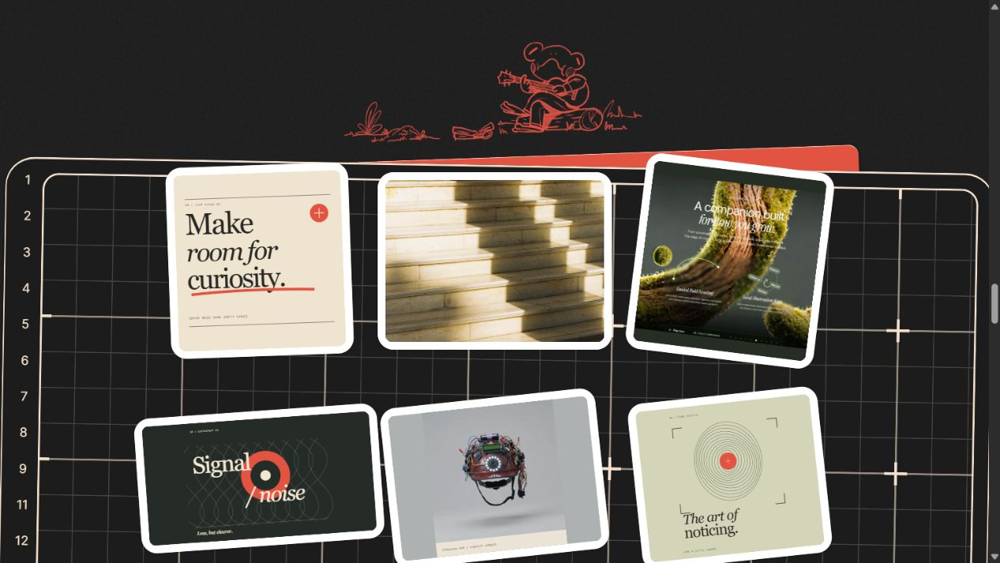
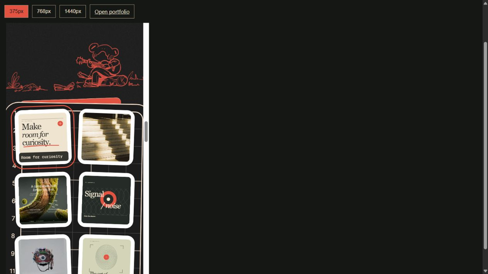
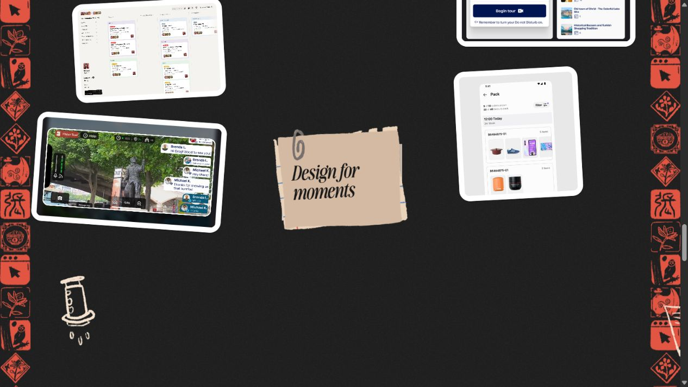
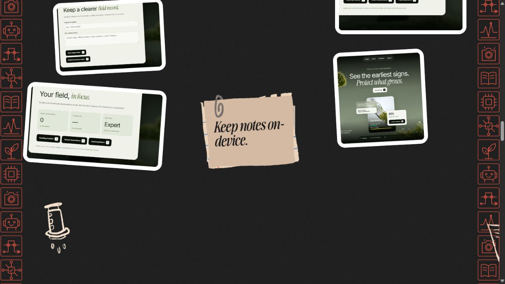
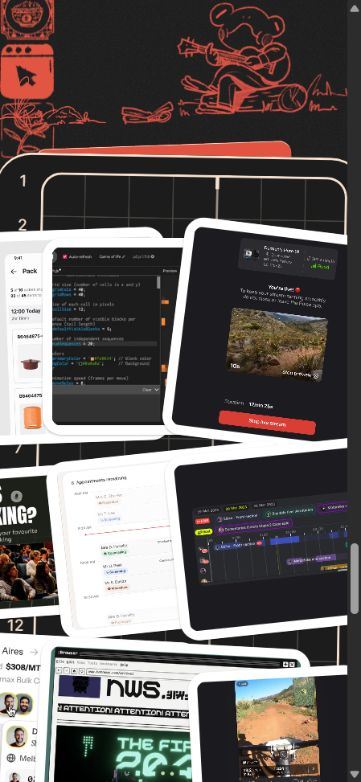
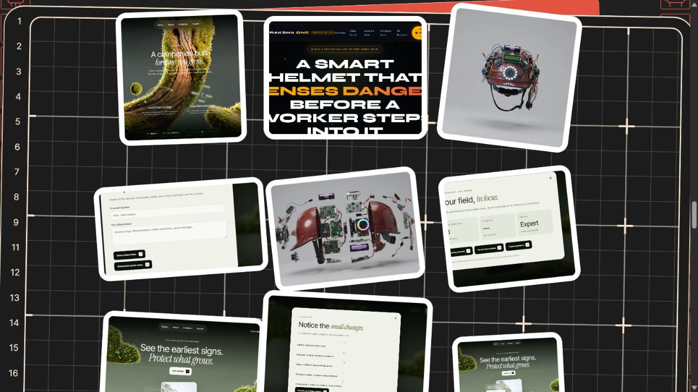

Current design, 28 September 2026: original graphic studies, selected project details and credited photography. Project descriptions have moved into case studies; Home uses a compact index. Artwork opens in a keyboard-operable viewer. The mobile collage now fits two columns.


Open the updated portfolio · Test responsive widths
The captures below document the previous iteration, not the current design. They remain as an audit trail.
Matching 1280 × 720 browser viewports. The restored version uses Satyarth’s published interfaces and repository concept renders. These are visual comparisons, not automated pixel-difference tests.




The earlier version retained the red backing, grid, staggered frames, paper cards and existing motion, but its nine screenshots were visually repetitive. The current version above addresses that through curation and a lighter Home page.
Open the portfolio · Open the original reference